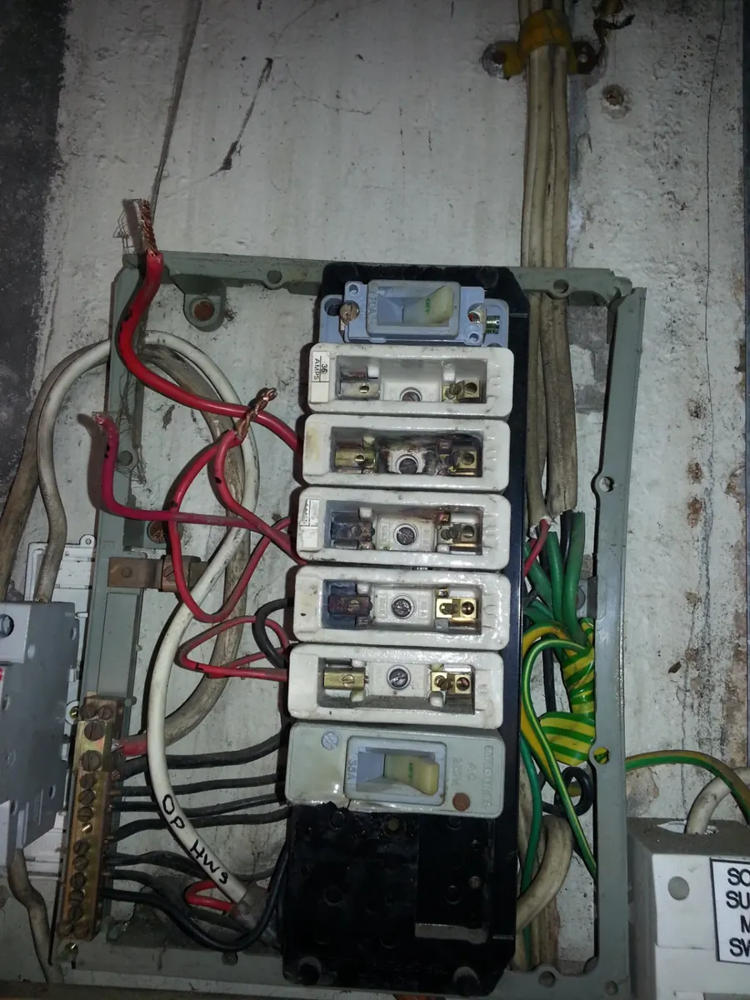
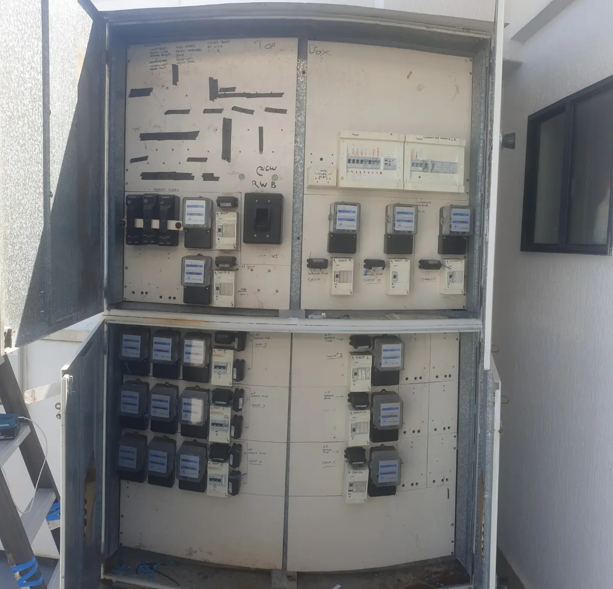
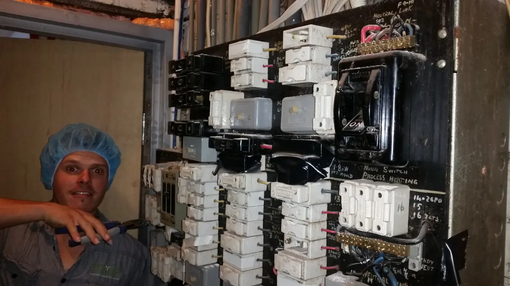

A switchboard should protect the property clearly and reliably.
Older switchboards can become crowded, difficult to understand or poorly suited to later additions. An upgrade should improve protection, organisation and the way the installation is managed.
What this service covers.
Safety-switch protection
Assess existing protection and upgrade where the installation requires improvement.
Older switchboards
Replace or modernise boards that no longer suit the property or the way it is being used.
New circuits & additions
Plan switchboard changes alongside renovations, EV charging or added electrical loads.
Clear labelling
Keep circuit identification and board layout practical for future servicing.
Older boards come in many forms.
Age alone does not decide whether a board needs upgrading. Condition, protection, crowding, additions and the work being planned all matter.



Common questions.
How do I know if my switchboard is old?
Porcelain fuses, limited safety-switch protection, crowding and years of additions are common reasons to have a board assessed.
Do I need a new board for every renovation?
Not automatically. The existing switchboard should be assessed against the work being added and the condition of the installation.
Can a switchboard upgrade be combined with other work?
Yes. It often makes sense to coordinate it with renovations, new circuits, EV charging or larger electrical upgrades.
Switchboard Upgrades across Byron Bay and nearby Northern Rivers.
This service is available across the main Berryman Electrical service area, including the locations below.